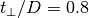

Dimer Mott transition¶
Follow the spectral function from the correlated metal into the dimer Mott insulator. The spectral functions is decomposed into the bonding and anti-bonding contributions to make it explicit that is is a phenomenon of the quasiparticles opening a band gap.
Using real frequencies solver
# author: Óscar Nájera
from __future__ import division, absolute_import, print_function
import numpy as np
import matplotlib.pyplot as plt
import dmft.common as gf
import dmft.ipt_real as ipt
w = np.linspace(-4, 4, 2**12)
dw = w[1] - w[0]
beta = 800.
nfp = gf.fermi_dist(w, beta)
The  scenario¶
scenario¶
tp = 0.3
gss = gf.semi_circle_hiltrans(w + 5e-3j - tp)
gsa = gf.semi_circle_hiltrans(w + 5e-3j + tp)
urange = np.arange(0.2, 3.3, 0.3)
urange = [0.2, 1., 2., 3., 3.47, 3.5]
plt.close('all')
for i, U in enumerate(urange):
(gss, gsa), (ss, sa) = ipt.dimer_dmft(
U, tp, nfp, w, dw, gss, gsa, conv=1e-4)
shift = -2.1 * i
plt.plot(w, shift + -gss.imag, 'C0', lw=0.5)
plt.plot(w, shift + -gsa.imag, 'C1', lw=0.5)
plt.plot(w, shift + -(gss + gsa).imag / 2, 'k', lw=2.5)
plt.axhline(shift, color='k', lw=0.5)
plt.text(-2.8, 1.45 + shift, r"$U/D={}$".format(U), size=16)
plt.xlabel(r'$\omega$')
plt.xlim([-3, 3])
plt.ylim([shift, 2.1])
plt.yticks([])
# plt.savefig('dimer_transition_spectra.pdf')
The  scenario¶
w = np.linspace(-8, 8, 2**14)
dw = w[1] - w[0]
nfp = gf.fermi_dist(w, beta)
tp = 0.8
gss = gf.semi_circle_hiltrans(w + 5e-3j - tp)
gsa = gf.semi_circle_hiltrans(w + 5e-3j + tp)
urange = np.linspace(0.2, 1.64, 6)
urange = [0.5, 1., 1.352, 2.5]
plt.close('all')
for i, U in enumerate(urange):
(gss, gsa), (ss, sa) = ipt.dimer_dmft(
U, tp, nfp, w, dw, gss, gsa, conv=1e-4)
shift = -2.1 * i
plt.plot(w, shift + -gss.imag, 'C0', lw=0.5)
plt.plot(w, shift + -gsa.imag, 'C1', lw=0.5)
plt.plot(w, shift + -(gss + gsa).imag / 2, 'k', lw=2.5)
plt.text(-2.8, 1.45 + shift, r"$U/D={}$".format(U), size=16)
plt.xlabel(r'$\omega$')
plt.xlim([-3, 3])
plt.ylim([shift, 2.1])
plt.yticks([])
# plt.savefig('dimer_transition_spectra_tp0.8.pdf')
Out:
Failed to converge in less than 3000 iterations
Total running time of the script: ( 2 minutes 1.693 seconds)